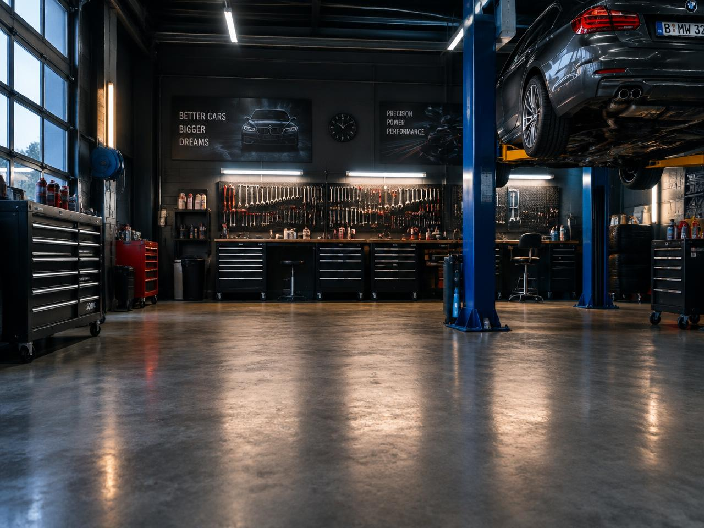
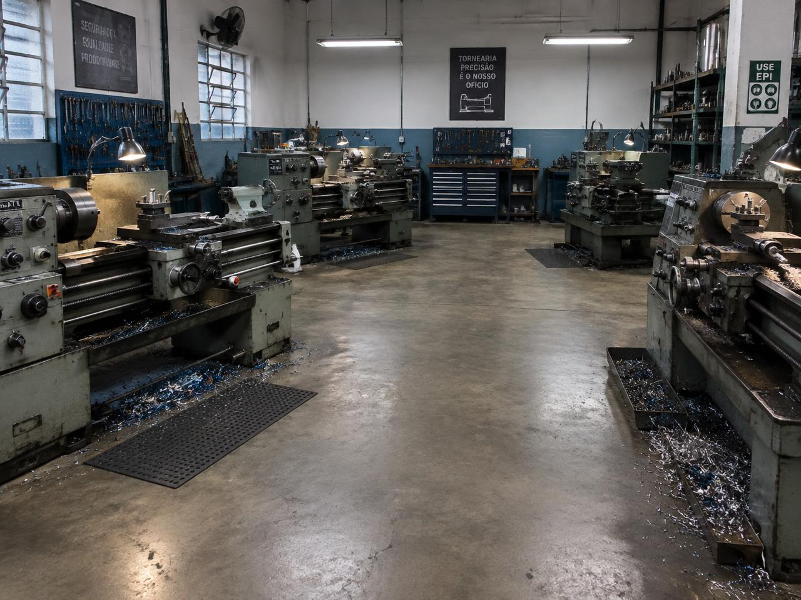

1 Posicione-se e capture
Fique de frente para a câmera e faça um gesto.
2 Escolha sua moldura
Estilos rápidos
Ajustes da foto
100%
100%
100%
⚙️ Ajustes avançados de recorte
2
30%
Sem moldura
 Backdrop Senai
Backdrop Senai

Carros
Tornearia3 Sua foto está pronta!
Escaneie o QR Code para baixar sua foto no celular.
Aponte a câmera do celular para baixar
Enviando sua foto...
Só um instante, estamos preparando a sua foto.
Iniciando câmera...